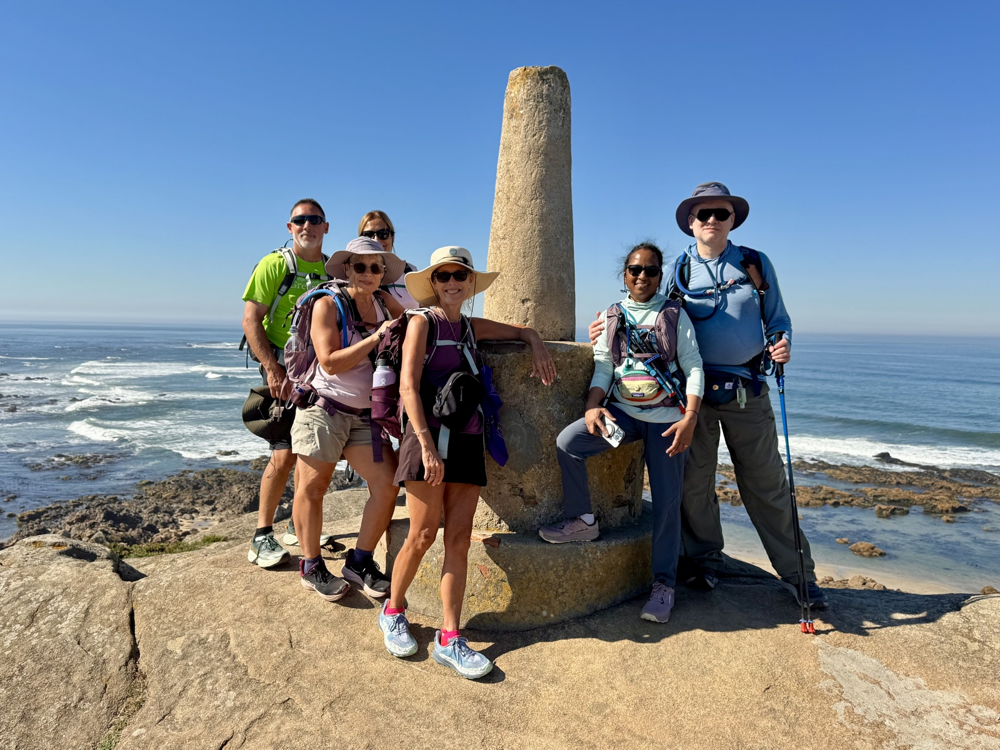
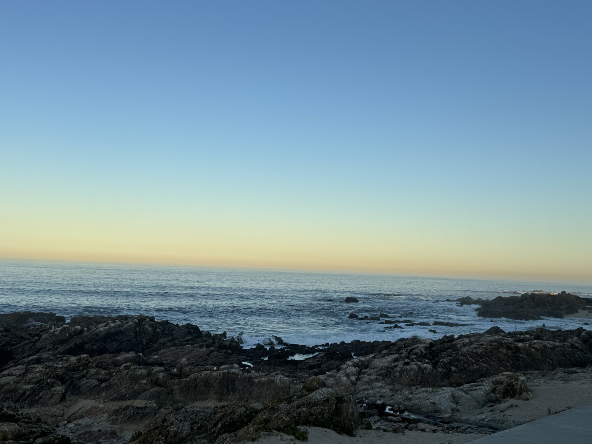
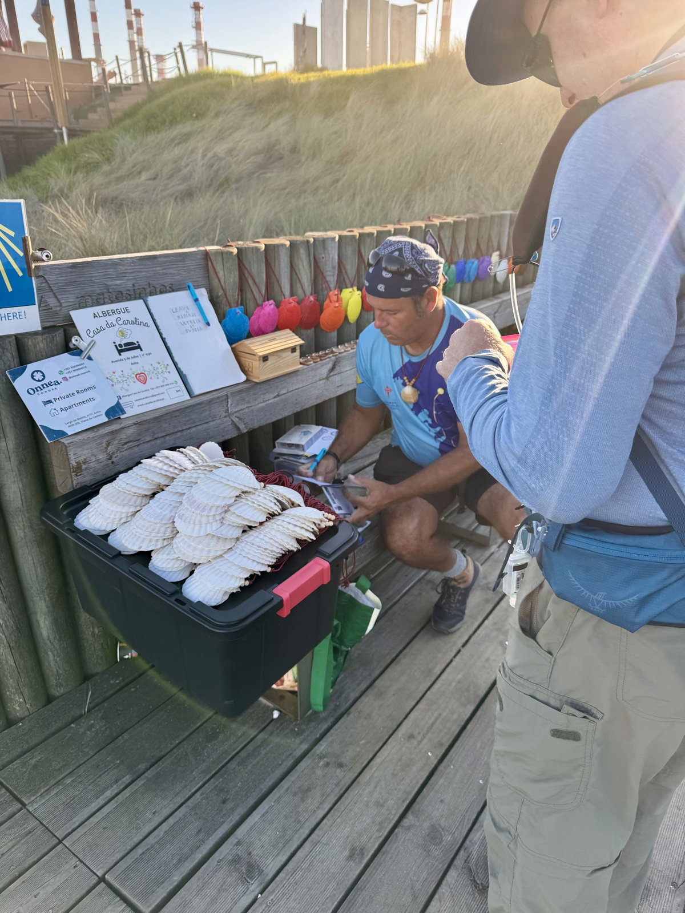
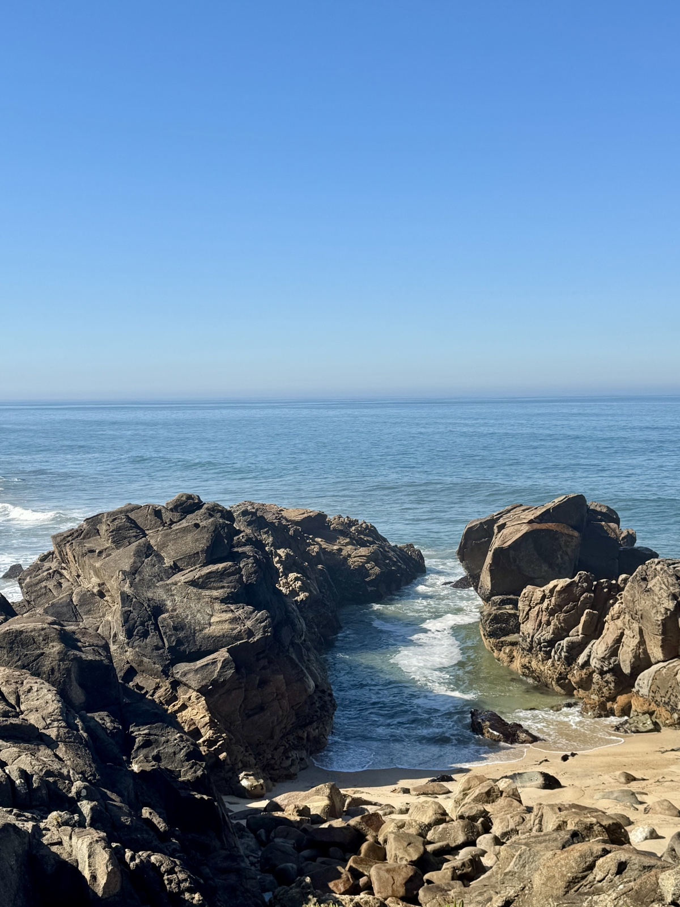
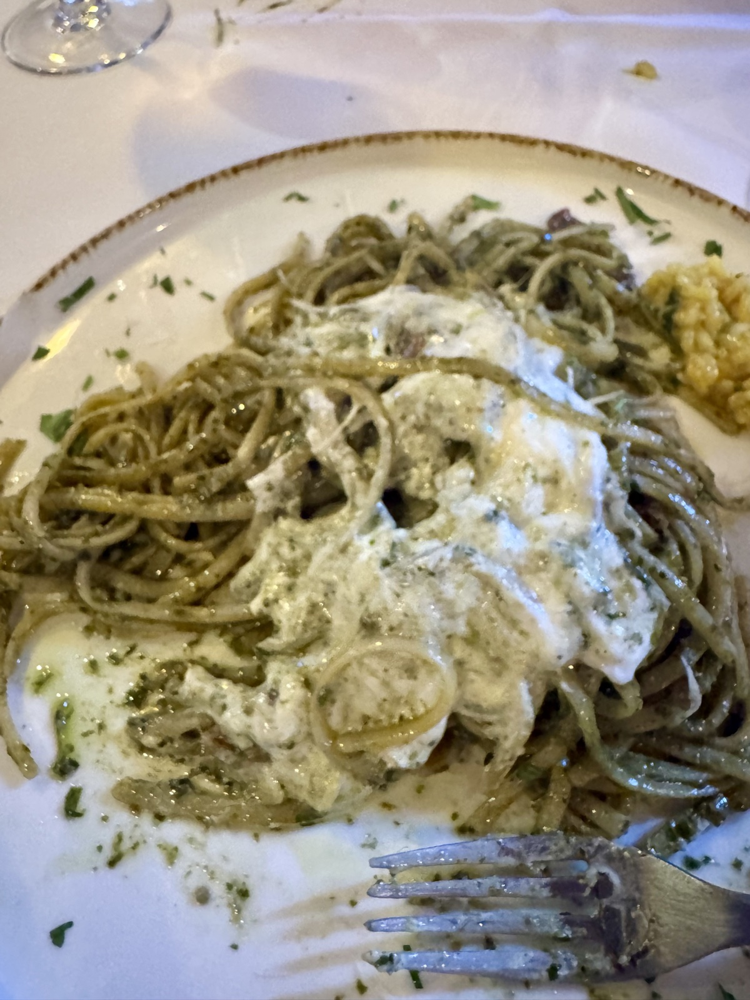

Stage 1: Coastal
Coastal Camino Santiago 13 miles, 32,000 steps, and 5 hours 45 minutes.
Porto (Matosinhos) to Vila do Conde.
Accommodations: Hotel Brazao.

6 Pilgrims heaved heavy suitcases and daypacks into a small van at the crack of dawn this morning. Broad smiles and overly caffeinated cheeriness made a speedy ride to Matosinhos even faster. Jumping out of the van at our start—we immediately wondered where we would find toilets! (Or at least I did.)
Turns out that there are lots of free and CLEAN public restrooms along this first stage of the coastal route and several additional opportunities at cafes, restaurants, and bars. Woohoot!

The route was one long, stunningly beautiful coastline with soft, white sand, and mounds of rocky masses jutting out into the sea and sometimes incorporated into buildings and memorials. The Memoria Beach and Obelisk was built in honor of the 7,500 men who sailed from this beach in the 1832 Portuguese Civil War. Memorials everywhere in Portugal honor their veterans and surviving heirs.

The “trail” in this stage was primarily a wooden boardwalk and cobblestone walkways with a little sand thrown in near the beach. Wooden bridges made for very flat terrain with the exception of a few sets of stairs.
I hiked with 64 ounces of water in two containers and a bag of nuts, dried fruit, and seeds. Very easy to snack on and good energy throughout the morning.

We stopped periodically for short stints to admire the ocean waves, climb a mound of rocks, or wish fellow pilgrims a Buen Camino. We snapped photos of the sites, each other, and posed for larger group photos with our fellow pilgrims. Every pilgrim was pleasant, full of smiles, and well wishing.

Our early afternoon treat were plates of the best pasta I have ever tasted! Fresh gluten free speghetti with mounds of pistachios, fresh herbs, olive oil, and cheeses. Rose and a lovely green salad with olives topped off my refueling festival.
Resting now. The backpack was not light—and my feet feel like they hiked 13 miles. Normal Camino wear and tear with the experience. Our hotel is on a side street in a residential area near the town square. Quiet and clean.
Feeling grateful for a delightful group of human beings with whom I’m sharing this experience. Today we toasted to life—cancer free for my friend Prameela. Amen to that and life going forward!!!